ACHIEVEMENTS
1. Educational Empowerment: Illustrating Minds
Nkrumah recognized that education was pivotal for a nation's progress. He established institutions that continue to shape the country's intellectual landscape:
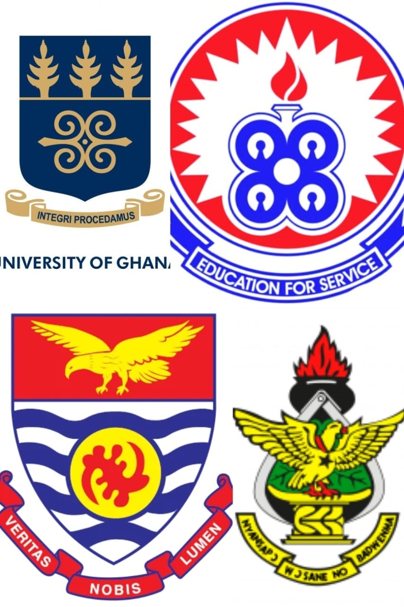- Accra Polytechnic (Now Accra Technical University)
- Ajumako School of Languages (Now Under UEW)
- Kwame Nkrumah University of Science and Technology (KNUST)
- University of Cape Coast (UCC)
- Enchi Training College
- Fosu Training College
- University of Ghana (University College of Gold Coast)
- Ghana Medical School
- Techiman Secondary School
And Many More
2. Industrial Advancements: Building the Foundation
A wave of industrialization initiatives that laid the foundation for Ghana's economic strength marked Nkrumah's presidency. His focus on creating self-reliance and reducing dependency on imports resulted in the establishment of several key enterprises:
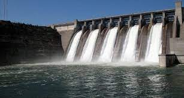
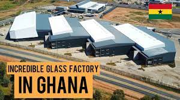
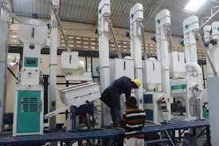
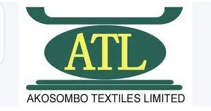
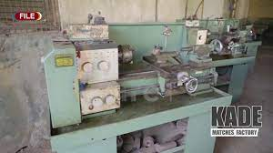
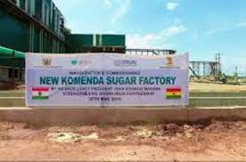
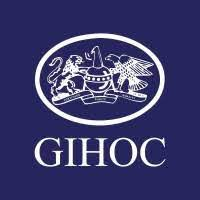
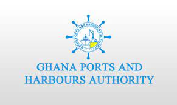
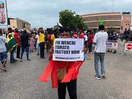
3. Infrastructure and Urban Development: Shaping Modern Ghana
Nkrumah's presidency saw the transformation of Ghana's urban landscape, with projects that continue to define its modernity:
- Kumasi Central Hospital (Now Komfo Anokye Teaching Hospital): Nkrumah's investment in healthcare is evident in the expansion of this hospital, ensuring quality medical care for Ghanaians.
- Korle Bu Teaching Hospital: The expansion of Korle Bu, with specialized blocks, demonstrated Nkrumah's commitment to healthcare excellence.
- Tema Township and Tema Motorway: Nkrumah's vision for a modern industrial city materialized in the establishment of Tema Township and the Tema Motorway, linking Accra and Tema for efficient transport.
- Kumasi Jute Factory and Kumasi Shoe Factory: These initiatives contributed to industrial growth, providing quality jute products and footwear to Ghanaians.
- City Hotel Catering Rest Houses (Now Golden Tulip - Kumasi): The transformation of this facility into Golden Tulip Hotel demonstrates Nkrumah's commitment to hospitality infrastructure.
- Patasi Estate: Nkrumah's vision for planned housing resulted in the creation of Patasi Estate, catering to urban housing needs.
- Meridian Hotel: The establishment of Meridian Hotel highlighted Nkrumah's efforts to enhance tourism infrastructure.
4. Financial and Economic Fortitude: Building Institutions
Nkrumah's legacy in the financial sector is palpable through the establishment of key institutions:
- Bank of Ghana (BoG): The BoG's foundation during Nkrumah's time remains the backbone of Ghana's financial system.
- Ghana Commercial Bank (GCB): Nkrumah's efforts resulted in the establishment of GCB, facilitating financial access and stability.
- National Investment Bank (NIB): The NIB's creation reflects Nkrumah's foresight in fostering investment and economic growth.
- Ghana Black Star Line: Nkrumah's endeavors in the maritime sector included the establishment of the Ghana Black Star Line, fostering shipping and trade.
- Ghana News Agency: The creation of this agency strengthened media and communication networks, supporting national development.
- GIHOC Pharmaceuticals: Nkrumah's focus on pharmaceuticals led to the establishment of GIHOC Pharmaceuticals, contributing to healthcare access.
5. Cultural and Creative Progress: Nurturing Identity
Nkrumah recognized the significance of culture and creativity in national identity and growth:
- Ghana Film Industries - Accra and Ghana Film Corporation: These institutions nurtured Ghana's film industry, fostering cultural expression and creative entrepreneurship.
- Institute of African Studies: Nkrumah's commitment to preserving and studying African heritage is evident in this institute's founding.
- State Farm Institutes: Nkrumah's agricultural innovation extended to State Farm Institutes, promoting modern farming techniques.
Some Images of Nkrumah
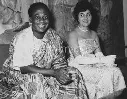
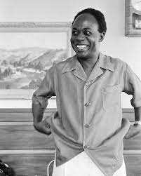
 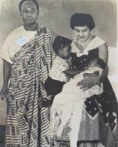
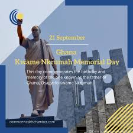
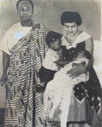
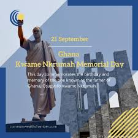
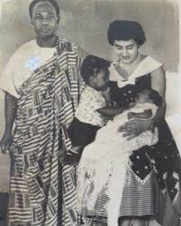
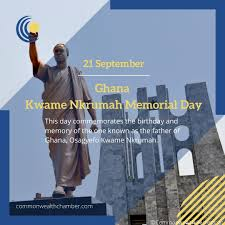